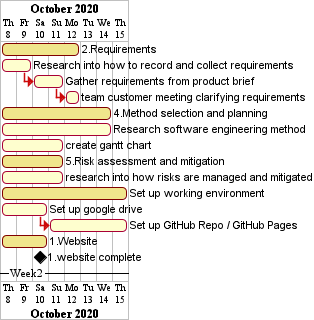
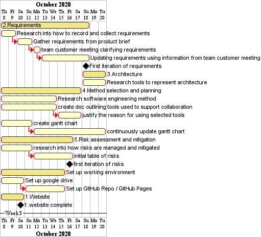
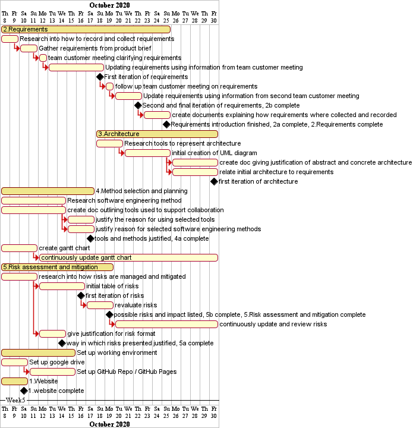
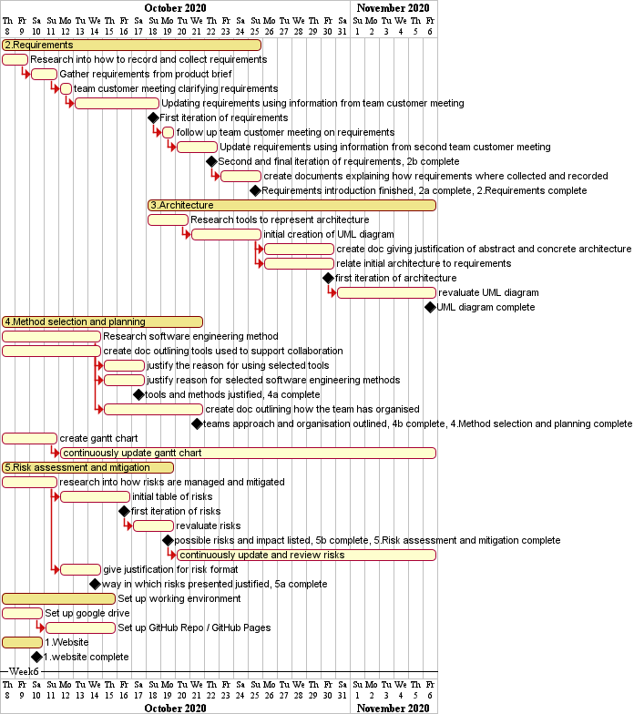
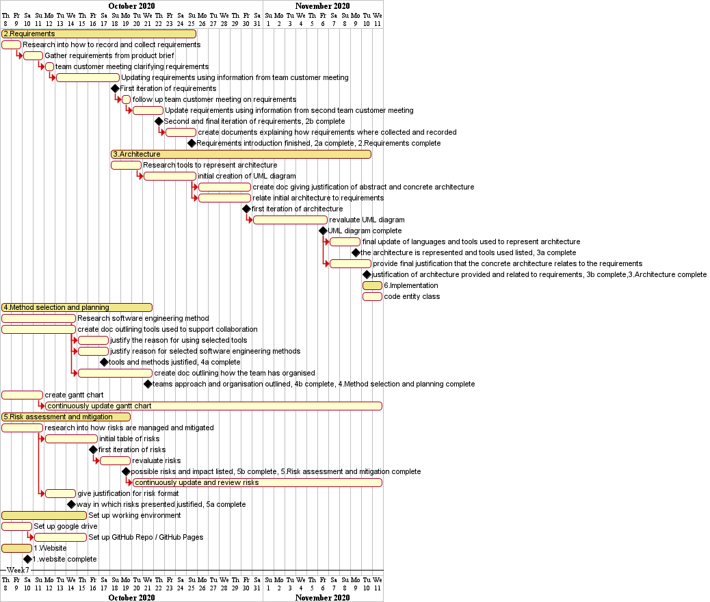
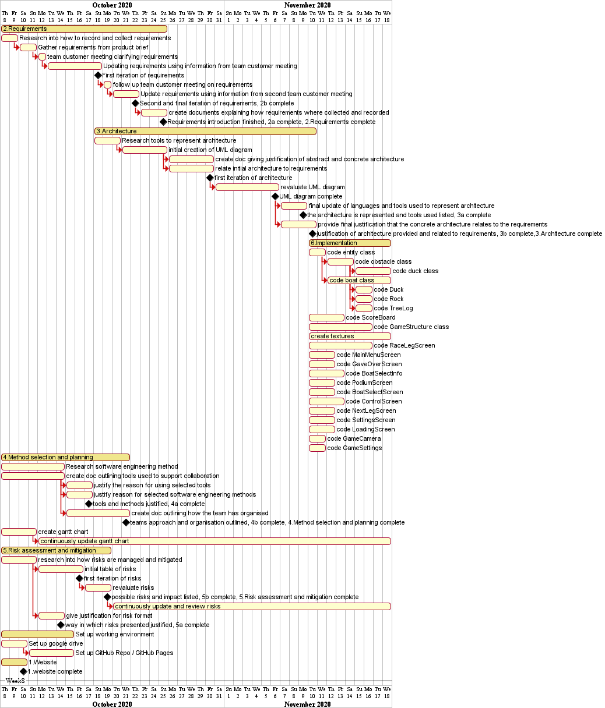
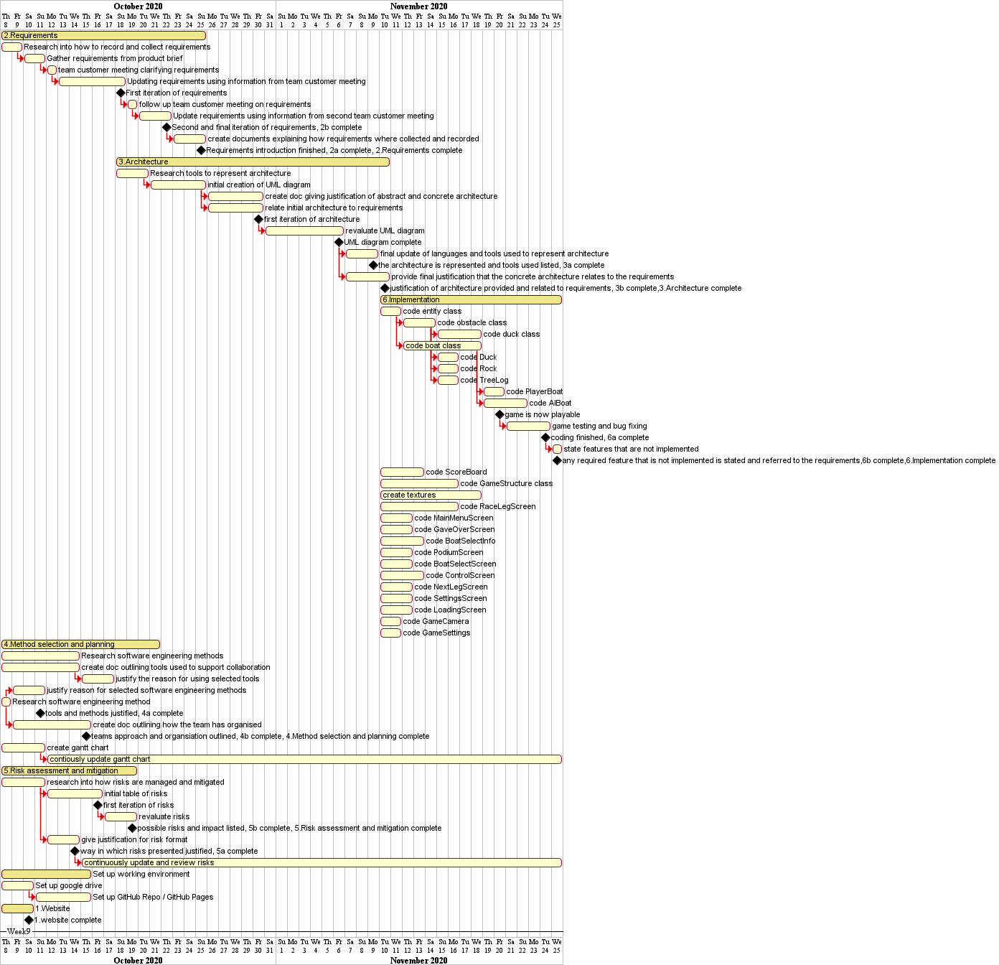

Initial Gantt chart is created with mainly research based tasks to be completed. Architecture is not listed as requirements are required from which the architecture is based off.
After an additional week the first set of milestones has been reached with the first iterations of risks and requirements. The plan changed to include further research tasks and some writeups on why we are going to uses them.
Requirements became a priority to finish so that the designing of the architecture could begin. All the initial risks where identified with risks in future being reassessed on a weekly basis.

Reaching the end of method selection and planning documentation with the overall project plan also continuously being reviewed on a weekly basis, allowing for future weeks to focus on architecture.
UML diagram expanded in much greater detail to allow for more clarity when the implementation phase begins in the following week.
Final documents for the architecture are created allowing for the initial creation of the first abstract class, entity from which other classes are derived.
Almost all of the time was spent on implementation with a focus on following the critical path, allowing the game to be playable so that testing can begin.
Finishing on implementation allowed for some quick debugging before submitting project.
